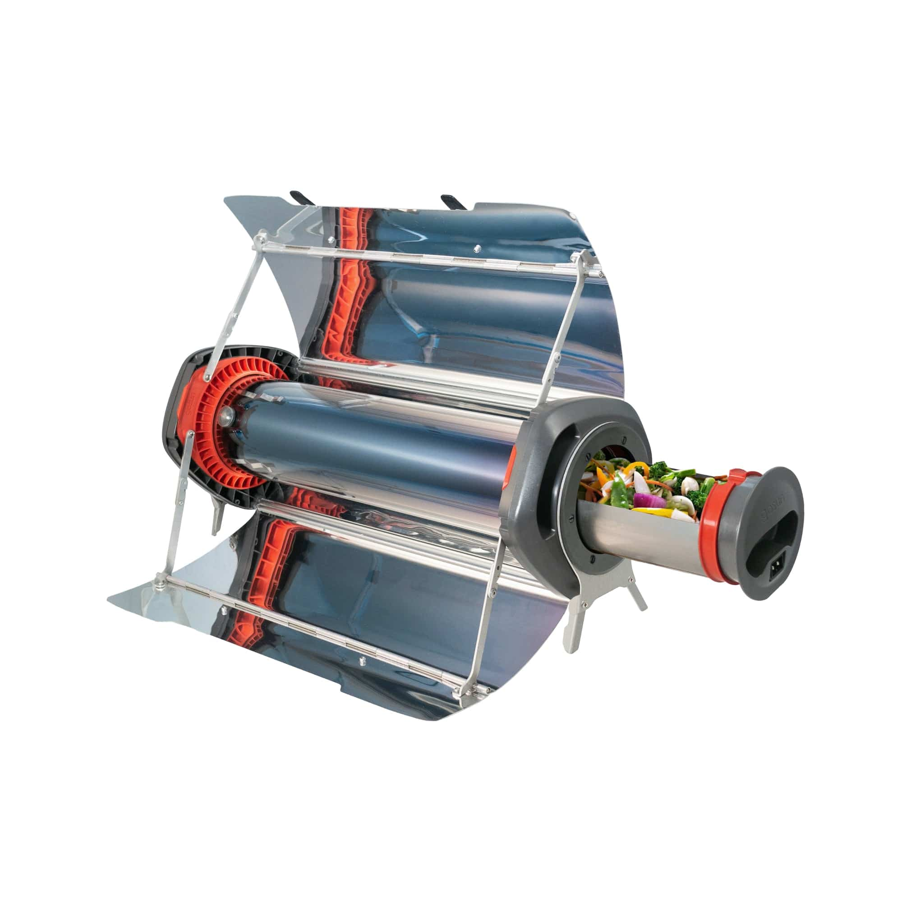
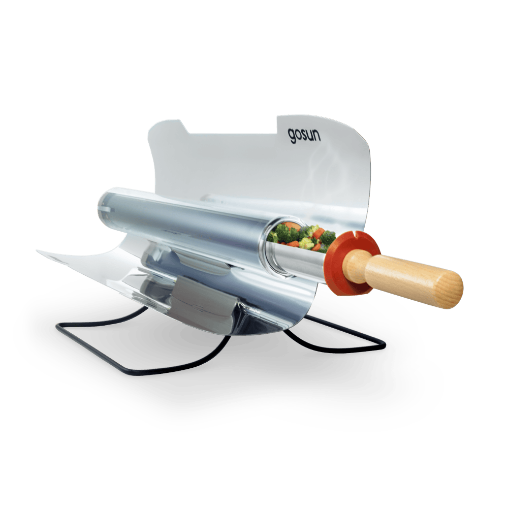
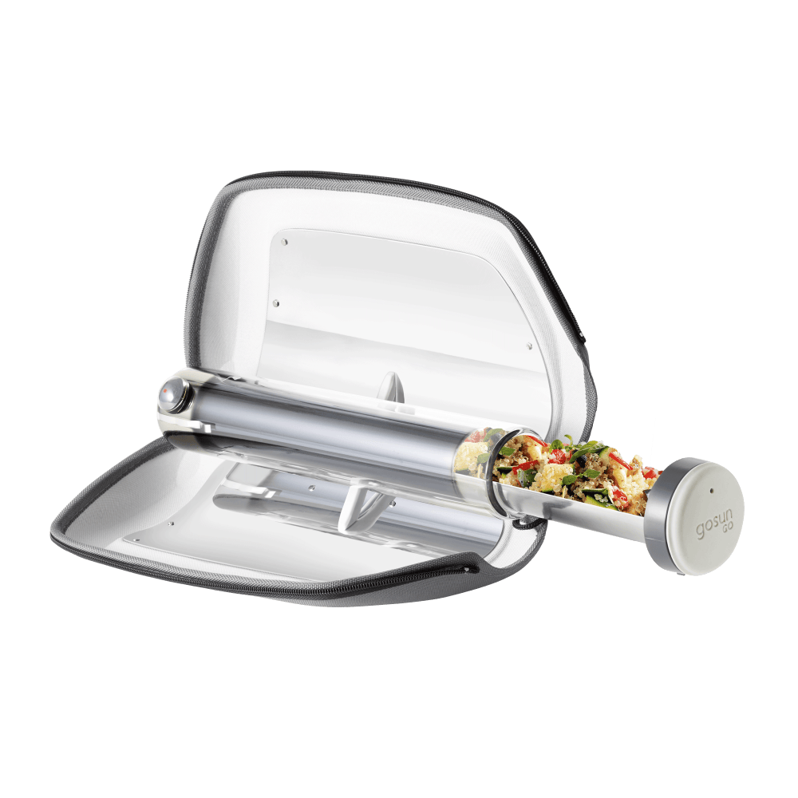
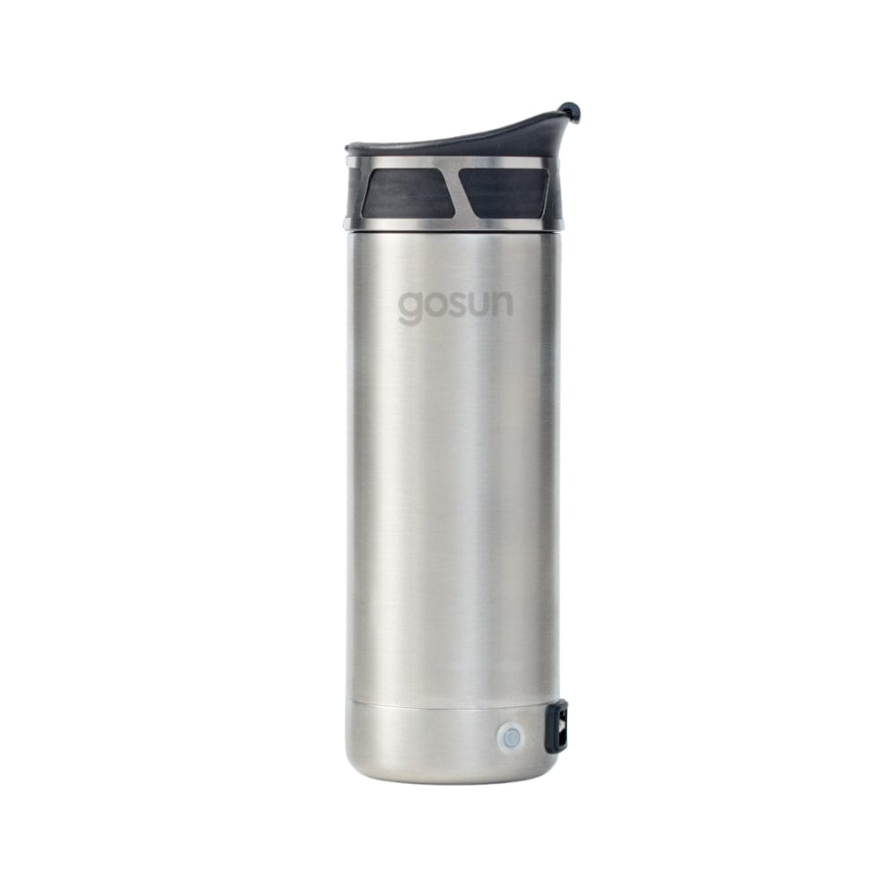

GoSun builds solar ovens that reach 550°F and cook a full meal in 20 minutes — no fuel, no electricity, no emissions. From the $75 backpack-sized Go to the $499 hybrid Fusion that cooks at night, we ranked every model worth buying.
Quick Answer: The best GoSun solar oven for most people is the GoSun Sport ($249) — 550°F max temperature, 1.2L capacity for 2–3 people, 7 lbs, and cooks a meal in 20 minutes. For families or anyone who needs to cook at night and on cloudy days, the GoSun Fusion ($499) adds a 12V electric backup element and feeds 4–5 people. For ultralight camping, the GoSun Go ($75) weighs just 2 lbs and fits in a backpack. GoSun’s patented vacuum tube technology converts 80% of sunlight into heat — no competing solar oven matches that efficiency. All models reach 550°F and bake, roast, and steam with zero fuel.
GoSun is a Cincinnati-based company that builds solar-powered cooking and cooling products. They appeared on Shark Tank, hold multiple patents on evacuated tube solar cooking technology, and have shipped products to over 130 countries. Their approach is simple: take the vacuum tube technology used in solar water heaters and miniaturize it into portable ovens that cook food with sunlight alone.
The solar cooking market has existed for decades — Sun Oven, Solavore, and DIY reflector designs are well-known. GoSun changed the game with three innovations:
GoSun isn’t a power station brand. They don’t make generators or batteries. What they make is the other half of the off-grid equation: a way to cook food without fuel. For campers, RV travelers, preppers, and anyone building an emergency kit alongside a solar generator, GoSun fills a gap that no power station brand touches.
| Rank | Model | Type | Capacity | Weight | Power | Price |
|---|---|---|---|---|---|---|
| #1 | GoSun Fusion | Hybrid Oven | 3L (101 oz) | 14 lbs | Solar + 12V | $499 |
| #2 | GoSun Sport | Solar Oven | 1.2L (40 oz) | 7 lbs | Solar | $249 |
| #3 | GoSun Go | Solar Oven | 0.9L (13.5 oz) | 2 lbs | Solar | $75 |
| #4 | GoSun Brew | Coffee Maker | 16 oz | 3 lbs | 12V / 130W | $79 |

The Fusion is GoSun’s flagship — and the world’s first solar oven that also works without sun. A borosilicate glass vacuum tube captures sunlight through wide-angle reflectors, reaching 550°F in direct sun. When clouds roll in or the sun sets, a built-in 12V electric heating element takes over — drawing only 150 watts, about the same as a laptop charger.
The 3-liter (101 oz) cooking chamber feeds 4–5 people. That’s enough for a full chicken and rice dinner, a pot of chili, or a batch of cornbread. The included silicone cooking trays are non-stick, dishwasher-safe, and oven-rated to 550°F.
The hybrid angle matters for solar generator owners. Pair the Fusion with an EcoFlow DELTA 2 Max (2048Wh) and you get roughly 13 hours of electric cooking from a single charge — enough to cook 6–8 meals. During the day, the solar oven saves your battery for everything else. At night, 150 watts is barely a dent. This is the off-grid kitchen setup no propane tank can match.

The Sport is GoSun’s best-selling model and the solar oven that put them on the map. Same patented vacuum tube, same 550°F max temperature, but in a lighter 7 lb package with a 1.2-liter chamber that serves 2–3 people. It cooks a meal in as little as 20 minutes under direct sun.
The award-winning design converts nearly 80% of all sunlight entering its reflectors into usable heat. The tube is cool to the touch on the outside even while cooking at 400°F+ inside — safe around kids and pets. The collapsible reflectors fold down to 24” × 8” × 8” for transport.
Best for: Couples and solo campers who want a proven, portable solar oven under $250. If you don’t need electric backup or large-group capacity, the Sport delivers the same cooking performance as the Fusion at half the price and half the weight.

The Go is GoSun’s entry-level model — and at $75, the most affordable vacuum tube solar oven on the market. It weighs 2 lbs, fits in a backpack (17” × 9” × 6”), and still reaches the same 550°F as its bigger siblings.
The 0.9-liter tube handles solo meals: a chicken breast, a serving of rice, steamed vegetables, or a cup of soup. Cooking time is about the same as the Sport — 20 minutes in direct sun. It includes silicone baking trays, a solar dial for aiming, and a carrying bag.
Best for: Day hikers, backpackers, and anyone who wants to try solar cooking for the first time without a $250+ commitment. At $75, the Go is also an excellent addition to an emergency prep kit — a zero-fuel cooking option that never runs out of power as long as the sun is out.

The Brew is a 16 oz portable French press with a built-in 12V electric heating element. It heats 12 oz of water and brews coffee anywhere you have 12V power — car outlet, portable power station, or GoSun’s optional solar-charged battery pack. The double-insulated mug keeps your drink hot (or cold) for hours.
At $79, the Brew is the perfect add-on for anyone who already owns a solar generator for RV or van life. Drawing only 130 watts, it uses less power than a single LED light bulb on most portable power stations. Pair it with the GoSun Go and you have a complete solar breakfast setup for under $155.
Best for: Coffee drinkers who camp, RV, van-life, or want off-grid hot drinks. The optional battery pack ($299 extra) turns it into a fully solar-powered coffee station with 8 brews per charge.
GoSun isn’t the only solar oven brand. Here’s how it compares to the two main alternatives:
| Feature | GoSun Sport | Sun Oven | Solavore Sport |
|---|---|---|---|
| Price | $249 | $349 | $199 |
| Max Temp | 550°F | 400°F | 300°F |
| Cook Time | 20 min | 45–90 min | 60–120 min |
| Weight | 7 lbs | 21 lbs | 7 lbs |
| Capacity | 1.2L tube | Full pans | Full pots |
| Design | Vacuum tube | Reflector box | Insulated box |
| Wind Resistant | Yes (sealed tube) | No (open reflectors) | Moderate |
| Electric Backup | Fusion model only | No | No |
| Made In | USA (Cincinnati) | USA (Wisconsin) | USA (Colorado) |
The Go (2 lbs, $75) replaces fuel canisters on day hikes. The Sport (7 lbs, $249) handles weekend trips for two. Zero fuel weight savings compound over multi-day treks.
The Fusion pairs with your RV solar generator for 24/7 cooking. Solar during the day, 12V at night from your house bank. No propane refills.
When the power goes out, a GoSun oven cooks meals with zero infrastructure. No fuel, no electricity, no grid. Pair with a hurricane-ready solar generator for a complete backup system.
GoSun produces zero emissions. Teach kids about solar energy while cooking dinner. The Go is kid-safe (cool exterior) and simple enough for supervised children to operate.
If you’re building an off-grid cabin with battery storage, GoSun eliminates cooking from your power budget entirely during daylight hours. Every watt saved on cooking extends your battery life for lights, tools, and communication.
Solar cooking at farmers markets and outdoor events draws crowds. Zero fuel cost, zero emissions — and the GoSun itself is a conversation starter. See our food truck solar guide for the full setup.
GoSun’s Fusion draws only 150 watts on electric mode. Here’s how far your existing solar generator can take it:
| Solar Generator | Capacity | Fusion Cook Time | Meals Estimate |
|---|---|---|---|
| ALLPOWERS R600 | 299Wh | ~2 hours | 1–2 meals |
| Jackery 1000 Plus | 1264Wh | ~8.4 hours | 4–6 meals |
| EcoFlow DELTA 2 Max | 2048Wh | ~13.6 hours | 6–8 meals |
| ALLPOWERS R3500 | 3168Wh | ~21 hours | 10–14 meals |
| OSCAL PowerMax 3600 | 3600Wh | ~24 hours | 12–16 meals |
During daylight hours, the Fusion cooks for free on solar — saving your battery for lights, phone charging, and other gear. At 150W electric draw, the Fusion is one of the most efficient cooking appliances you can run on a portable power station. For comparison, a standard electric hot plate draws 1,000–1,500 watts — 7–10x more.
Yes. GoSun solar ovens use patented evacuated tube technology that converts nearly 80% of sunlight into usable heat. The Sport model reaches 550°F and cooks a full meal in 20 minutes under direct sun. The Fusion hybrid model works on cloudy days and at night by switching to a 12V electric heating element drawing only 150 watts. GoSun ovens work in temperatures as low as 0°F as long as there is direct sunlight — the vacuum tube insulates the food from outside air temperature.
Yes. The GoSun Sport cooks meals for 2–3 people with its 40 oz (1.2L) tube capacity — enough for rice, meats, vegetables, casseroles, and baked dishes. The GoSun Fusion feeds 4–5 people with its 101 oz (3L) capacity and wider tube. Common meals include chicken and rice, vegetable stir-fry, chili, baked potatoes, steamed fish, cornbread, and even cinnamon rolls. Cooking takes 20–60 minutes depending on the dish and sun intensity.
GoSun and Sun Oven take different approaches. GoSun uses a vacuum tube design that’s faster (20 minutes vs 45–90 minutes), more wind-resistant, and more portable (Sport weighs 7 lbs). The Sun Oven uses a box design with larger capacity and familiar pan-based cooking — easier for baking bread and casseroles. GoSun’s Fusion adds electric backup for cloudy days, which no Sun Oven model offers. GoSun wins for portability and speed. Sun Oven wins for capacity and traditional cooking style. For camping and RV use, GoSun is the better fit.
The solar-only models (Sport, Go) work on partly cloudy days as long as shadows are visible — direct sun isn’t required, but cooking takes longer. On fully overcast days, solar-only models won’t reach cooking temperature. The GoSun Fusion solves this completely with a 12V electric backup element that draws only 150 watts — it works at night, in rain, and on overcast days using a portable power station, car outlet, or wall adapter.
GoSun solar ovens bake, roast, and steam — the three primary cooking methods. Popular recipes include chicken breast (25 min), rice and beans (30 min), baked potatoes (45 min), cornbread (35 min), steamed vegetables (15 min), fish fillets (20 min), chili (40 min), and cinnamon rolls (30 min). The included silicone cooking trays are non-stick and oven-safe. GoSun provides a free cookbook with over 50 solar recipes. You cannot deep-fry or use loose liquids — the tube design requires solid food or food in the silicone trays.
GoSun solar ovens start at $75 and run on the most reliable fuel source on Earth — the sun.
Shop GoSun Solar Ovens → GoSun on Amazon → See our best solar generators for camping →Honest reviews, deal alerts, and buying guides delivered weekly. No spam — just the gear that matters.
Join 166+ subscribers. Unsubscribe anytime.